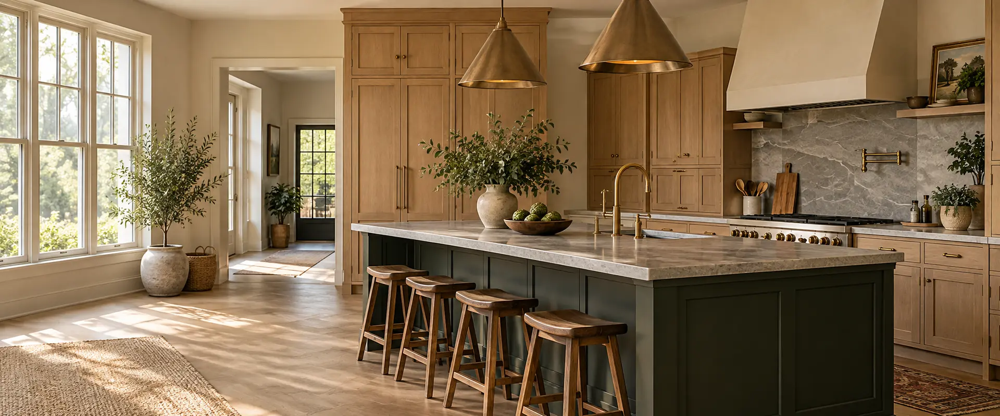
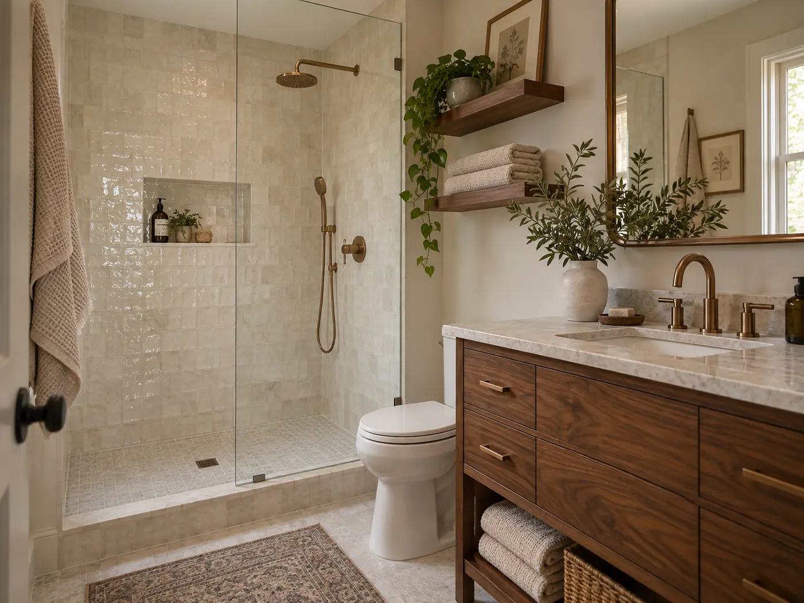
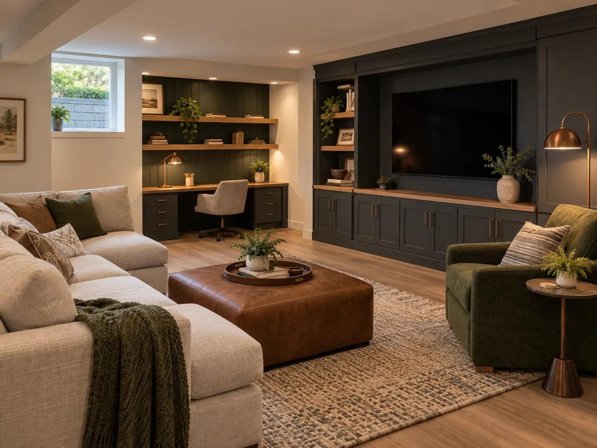

Kitchens
Layouts, cabinetry, surfaces, lighting, and practical storage planned as one useful room.

RESIDENTIAL REMODELING · FICTIONAL CONCEPT
Thoughtful renovations, clear planning, and durable details for the rooms you use every day.
Explore project conceptsOriginal AI-generated concept image
THE IRONLEAF APPROACH
Ironleaf Renovation Co. is an imagined Frederick-area remodeling business created to demonstrate a practical contractor website. Every project name, description, and image on this page is fictional.
WHAT WE BUILD
Each scope starts with the needs of the home, a shared plan, and straightforward expectations.
Layouts, cabinetry, surfaces, lighting, and practical storage planned as one useful room.
Comfortable, durable spaces with careful material choices and moisture-minded details.
Flexible lower-level rooms for work, gathering, hobbies, and everyday family life.
Targeted improvements that help connected rooms feel more functional and cohesive.
PROJECT CONCEPTS
These are fictional examples created for this portfolio—not completed client projects.
A brighter working layout with generous prep space, durable finishes, and warmer natural materials.

A compact room organized around an accessible shower, useful storage, and calm finishes.

A flexible family room with built-in storage and a dedicated workspace tucked into the plan.
A STRAIGHTFORWARD PROCESS
Talk through priorities, existing conditions, timing, and the way the space needs to work.
Confirm the scope, selections, responsibilities, and decision points before work begins.
Keep the site organized, communicate progress, and address details as the work moves forward.
Review the completed scope and make sure questions are resolved before closeout.
SAMPLE SERVICE AREA
This fictional company is positioned to serve homeowners in Frederick and nearby communities, including Urbana, Middletown, Walkersville, and New Market.
Illustrative service area only. Ironleaf Renovation Co. is not an operating contractor.
ABOUT THE CONCEPT
The Ironleaf identity is built around steady communication, useful design decisions, and work meant to last. The brand, team story, services, and portfolio are entirely fictional and do not represent licenses, credentials, or completed construction work.
DEMO QUOTE PATH
On a real contractor website, this section would collect the project type, location, timing, and a short description. This demo does not collect visitor information.